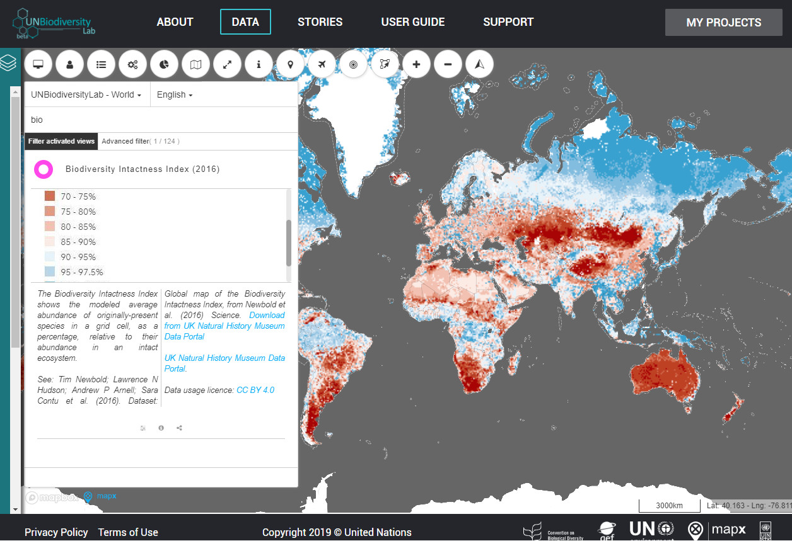
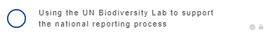
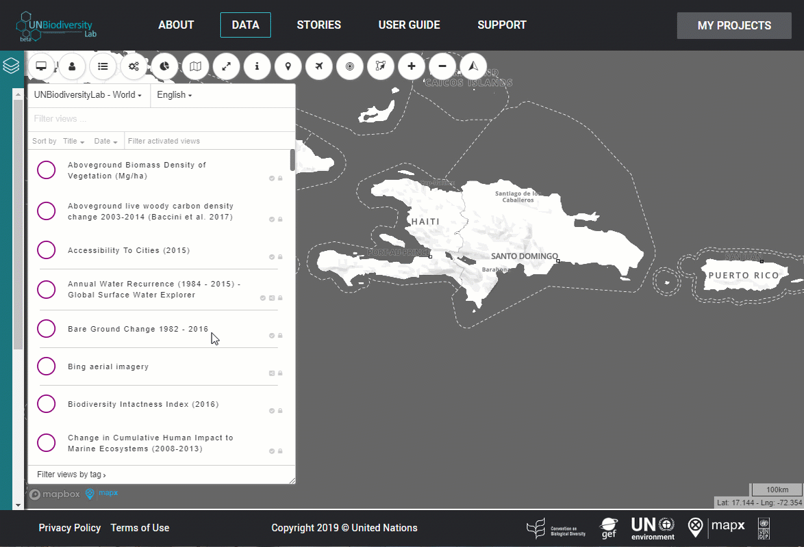
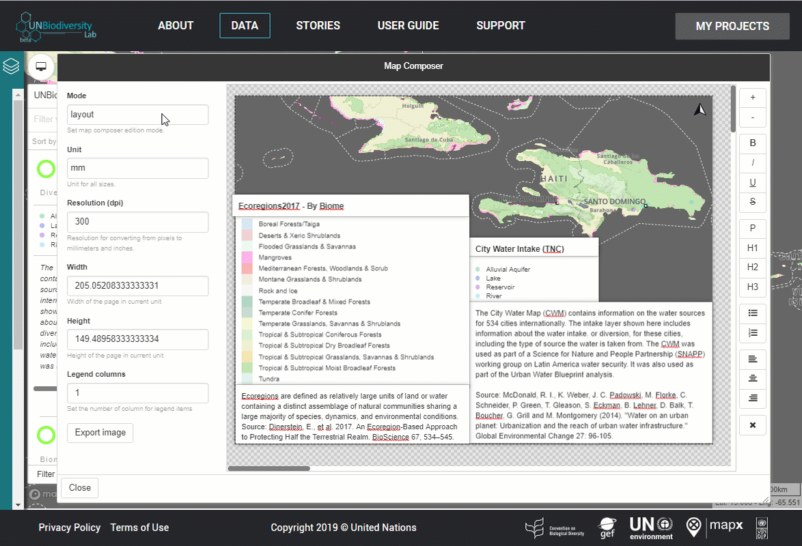
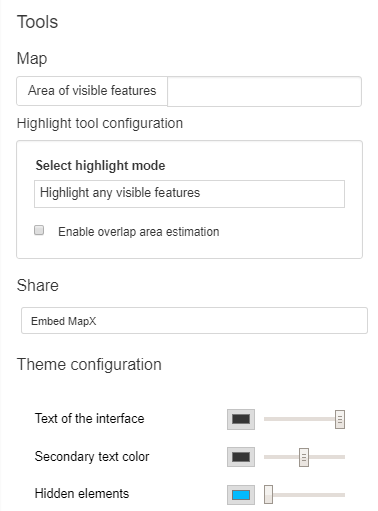
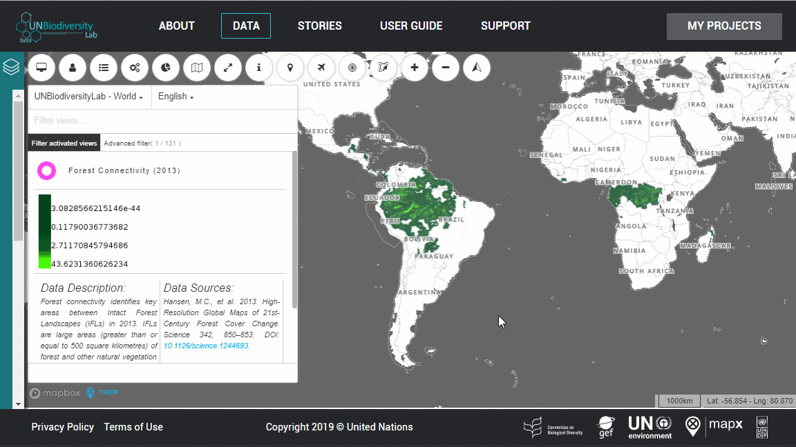

Public Data Catalogue
-
How do I register or log-in?

Before you begin exploring the data, register for the UN Biodiversity Lab.
- Click the log-in icon in the top right corner of the toolbar and enter your email.
- You will receive a one-time use code via email. To keep your information secure, a randomly generated one-time code is how you will always log-in to the UN Biodiversity Lab. You should receive an email immediately from bot@mapx.org.
- Enter this code into the website and you are officially logged in. Using the data catalogue as a registered user gives you access to more datasets and functions, including the ability to download data.
-
Adjusting the language and region

When you open the website, you will arrive directly in the data catalogue. You can find titles related to five of the Aichi Biodiversity Targets, key projects such as Nature Map, and other associated themes on the left sidebar below the country selection drop down menu. You can select your language in the view list. Translated versions of the MapX interface are available in French and Spanish. To activate a theme, click the switch beside it to see the associated views. Click a button to display the view.
- How do I find data?
- Can I custom categorise views?
-
How do I adjust the menus?

- Explore the map by clicking and dragging with your mouse, or using your keyboard keys.
- Zoom in and out using the mouse scroll, or the +/- buttons on the frame.
- Increase or shrink the size of the list of views within the frame by dragging the arrow in the corner at the bottom right of the legend.

Experiment with collapsing and expanding the left sidebar so that the map is full screen, or hiding the list of views using the view icon in the top toolbar.
-
What do the button colors mean?

The colour of the button denotes the type of data that created the view: purple for raster data and green for vector data. Vector and raster data are two fundamentally different ways of representing spatial data. Raster data is broadly thought of as data that represents things that exist on a range of values across space, such as a maps of temperature, land cover, population density, or the percent of canopy closure in a forest. The attribute of raster data is a value within a pixel (or grid cell) and can represent categorical values (such as a land cover classification) or continuous values such as elevation. In this example, the Biodiversity Intactness Index is a raster view in which every pixel has a continuous value.

Conversely, vector data is data that represents linear or area features on a map, such as highways (lines), cities (points), or species range maps (polygons). Vector data will normally contain not just a feature on a map, but will also have other data associated with it called attribute data. Attributes can be many things, such as place names, the area of a feature, or other calculated or derived data that is associated with a feature. In this example, for each feature in the Ecoregions2017 dataset in UN Biodiversity Lab there is an attribute for that feature’s Ecoregion (a finer scale land classification), as well as its Biome (a more generalised land classification). Try comparing two datasets, one with a purple button and one with a green button.

In addition, there are red buttons which denote an external geodatabase that is hosted on the UN Biodiversity Lab, such as the World Database on Protected Areas. Geodatabases are secure cloud-based spatial data containers, maintained by research institutions for spatial data that the UN Biodiversity Lab updates regularly. The World Database on Protected Areas is the largest database of legally defined protected areas on the planet. This data is updated every month.
Blue buttons denote story maps. Story maps are an innovative storytelling tool which combines spatial data, narrative, and multimedia to communicate complex messages to wide audiences. To play a story map, click the play button. You can also interact with the data in story maps by locking or unlocking the “lock” in the top toolbar at any point in the story map where spatial data is shown.
-
Reset bearing

Using the right click button on your mouse, you can distort the angle of your view. To reset this and re-orient the map to the north, use the reset bearing button.
-
The view toolbar

In this example, you can see the two View Toolbars highlighted differ slightly. That is because one is a raster and one is a vector. Vector data has slightly more functions available on the platform. For example, the vector toolbar has the buttons “Zoom to all features” and “Zoom on displayed features”. These two buttons will help you display your selected vector features in the frame.

The “Settings” button in the View Toolbar can be used to select a range of values to display within the iframe and/or the transparency of the view. Some vector views that include a temporal range of data can be filtered using a time-slider.
When you want to reset the settings back to nil, you can click the “reset” button.

The small i is the metadata button. This button will return information about the dataset, including the the data provider, which projects the dataset is in, a link to retrieve the homepage of the source. You can also find basic statistics of interaction in the metadata window, such as how many times a view has been viewed.The metadata of vector views will also include the data integrity score.
-
How can I download the data?

You can download vector data in several different formats for use in your own programs, including ESRI shapefiles, geoJSON, and KML. Currently, the process to download raster data is not as simple. If you would like to download a raster dataset, please contact support@unbiodiversitylab.org. You cannot download any data if you are not logged in.
Once the download has finished, you will receive an email with a link to your data. Please note that, as some are protected under a view-only license, not all views are available for download. However, even if the data is not available to download, it is still possible to generate a map using the map composer feature.
-
How do I make a map?

UN Biodiversity Lab enables you to save, customize, and download the maps you create on the platform through our map composer tool. The map composer exports all views that are active on map, its legends, abstracts, and titles in PNG format at a user-defined resolution and allows full editing of structure and content of the map. Please note that the map composer is optimized for use in Google Chrome.
Activate the views on map and place them in the order you would like. Click on the map composer button.

To download your map in high resolution and certain width and height measures, you can switch the unit of measurement from “px” (pixels) to “mm” (millimeters) or “in” (inches) and define the resolution (in dpi) of the output. Define the size of the area that will be exported by dragging the margins of the “page”. Place the items where you prefer within the page by dragging them from the central point of the box. Resize them by dragging the margins. Text in the text box can also be edited, but please ensure that you include data provider information in the abstract text box. Use the sidebar on the right to change the layout, the size of the text and its appearance within a selected text box. Legends with large amounts of classes can be organized in multiple columns using the “Legend columns” button.
You can switch to “preview” to check how your map will look when it is downloaded.When you are ready to download, click on “Export image” and check your download directory for the downloaded map. Note: if this does not work, ensure that automatic downloads are enabled on your browser.
- How do I draw or create new features?
-
Toolbox features

The toolbox button in the top toolbar is where you can find additional tools, as well as customizing and styling options for your map. At the very bottom of the toolbox, under theme configuration, you can adjust the colours of your map, including the text, boundaries, and other elements which may come in useful when generating maps.
The “Embed MapX” button has the same features and options as the “Share View” button in the View toolbar. Links can be returned as an iframe or a direct link to the view within MapX.
- How can I share a view or project?
- Highlight and measure intersecting features
-
Can I search using the attribute table?

Yes! Attribute tables can be viewed and queried directly in the platform. To selectively filter data from the attribute table, click the “attribute table” button under the view. This will provide you with access to the attribute table, which you can sort and filter by column as in Excel. The data that is displayed on the map is dynamically updated every time you select a filter in order to only include the subset of data being shown in the table. To clear the filter, click the “Clear filter” button at the bottom of the box. The table, or a filtered subset of it, can be exported in CSV format through the button “Export CSV”.
6NR National Projects
-
Who’s who and doing what in the project?

What data a user can see, publish and edit is dependent on their user status. There are four types of users that exist in MapX: public, member, publisher and administrator. User status is defined for each project and therefore changes from project to project. An account can have a public role in project X while being a member in a project Y and an administrator in project Z at the same time.
The administrator of a project is the only person that:
- Can invite new members to the project
- Change the level of collaboration that each member has in the project (member, publisher, administrator)
- Accept or deny membership requests to the project that are being sent by other users. User privileges are shown in the below table.
*Creating views include making story maps.
-
Project configuration

Only administrators have the ability to modify the settings and parameters of the 6NR national projects. To configure the settings of your project, navigate to “Project configuration” in the Toolbox in order to set the description, initial position of the map, and user accessibility of your project.

Do not change the title of your project. You can change the description of your project which will be publicly viewable. To set the position of the map that your project will open to, click “Initial Map Position” and zoom in to the the chosen area and click “Use current map parameters.” You can highlight specific countries by selecting the country name(s) in the “Countries to be highlighted on the map” section. If it is not already set, this should be your 6NR country. If you would like your project to be public, check the box next to “This project is public.” This checkbox is important - it decides whether this project will be public or not. This means that your project can be searched by anyone under the “list of projects” and that views that have public access within it will be visible.
-
Invite members and define roles

In the toolbox, you can invite members to collaborate in your project and specify their user privileges. To invite people to collaborate on your project, click “Invite a new member” and enter the emails of people you would like to extend an invitation to. You can customize the message before sending it. New members should receive an email from the MapX bot immediately.

To define the user privileges of each member click “Define Roles” in the Project Configuration section of the toolbox to sort existing members to add to the publisher role. Each member will be able to see, use, and upload data in your project. Publishers can publish source layers and views for all members and can edit those that are available for “publisher” privileges. Administrators have the same authority as a publisher but can also change the status of others’ accounts and delete the project entirely. We recommend that each 6NR team only have one administrator.
-
How do I add views or delete views from my project?

Your 6NR .gifprojects are already pre-populated with views. If you would like to delete unnecessary views, navigate to the Toolbox within your project and select “Manage External Views” under “Project Configuration”. Delete the views you would like to remove.
If you accidentally delete a view that you would still like in your project, it is simple to add it back into your project. Navigate back to the Data Catalogue and find the view. Click the “Share this view to an external project” button beneath the view of your choice, and enter the name of your project(s) in the field and select “Add in selected project”. The save icon indicates that it has been sent to your project. Note: this can only be done if you are logged in and have publisher rights to the project.
-
How can I create an intersection of two or more vector layers?

To create a new view out of an intersection of two or more layers, you will need to have publishers or administrator privileges in your project. Click “Toolbox” button in toolbar, scroll down to the “Sources” section, and click “Area intersection tools”. In the first box, select the layers you wish to overlap. Or activate the “Add sources by views” to retrieve layers’ names from the name of the views. Select the views and then click “Add sources from those views” to confirm your choices. Select the country you wish to do the analysis, then select the type of analysis you want to run. If you’re creating a new layer, name the source layer before clicking “Run Analysis” to start the process. Once it is complete, you will receive an email confirming the creation of the new source

“Create a New View” using the source, change its access, and fill in the metadata using the functions available in the Toolbox. If you need assistance on this part - review the section on stylizing vector data.
- How can I upload data?
-
Manual upload

To add larger files (between 100-300 mb) to your project, navigate to the Toolbox. Under Sources, click “Add a source layer”, and title your data. Find your file and click “Open”. When it is complete the dialogue will read “Upload done”.

Then, click “Edit Sources Metadata” to fill out the metadata for the entire dataset. At the very minimum, your source must include a title and abstract. Fill out contextual information about the entire dataset to the best of your ability, then click “Save” and “Ok”.

Click “Manage Sources” to select which user groups have use and write access to the dataset. By adding a certain user group to write access, such as publishers, this means that publishers will be able to edit the source metadata and create views out of the data. Use means that particular group will be able to see the data and create a new view, but will not be able to edit the metadata.Under “Services”, you can select if you would like to allow the source to be downloaded or streamable via WMS/WFS services.

Click “Create a new view” to load your view into your project. Choose vector tile and click “Create”. You have now created an empty view which you will need to select a source layer and attribute to visualize. Navigate to the view page and select the pencil button beneath your new view. Under “Source Layer” select the dataset you just uploaded and click “Save” to visualize the default attribute (which can be changed under “Source Attribute”. Fill in the abstract for the view and click "Save" to see your data.

Fill in all the available metadata that is relevant to the variable you are displaying out of the dataset. This will be viewable to all user groups you set in this dialogue. This includes a relevant abstract, temporal scale, and other attributes that will contribute to your data integrity score. Select which primary variable you would like to display. Secondary variables will appear in a pop-up when a feature is clicked.
Your data is now in your project! Learn how to customize or style your data in the next walkthrough.
-
Drag and drop upload

Dragging and dropping data into your project works best with GeoJSON files, which must be under 100mb. Within your project, drag and drop the file into the frame. You should be able to see your data immediately on the area of interest. The source data layer will appear in the view list with an orange button, indicating that it is a temporary view.

In order to finalize the data upload, click the cloud button underneath the dataset title. After this process completes, navigate to the toolbox and select “Edit Source Metadata”. Fill in the metadata for your entire dataset to the best of your ability - metadata is almost as important as the data itself. At the very minimum, you must include a title and an abstract, contained within the textual tab, in order to save your dataset. Click Save and Close when you are finished.

Still within the Toolbox, select “Create a New View” and select vector tile, name the view and click “Create”. Navigate back to the view list, where you will see your new empty view. You will have to now select the source layer to visualize.

Select the pencil button beneath your view. Select the name of the source layer under the “Source Layer” option and click “Save” to automatically visualize it. You can select a different attribute to visualize under “Source Attribute”. Fill in all the available metadata that is relevant to the variable you are displaying out of the dataset. This will be viewable to all user groups you set in this dialogue. Metadata such as date, source, and scale increase the integrity of the dataset for the user. Select which primary variable you would like to display. Click Save and you should see your new view on the map.

You should now delete the original temporary source data that you uploaded - it is now saved within your new view. Click the garbage can icon beneath your data, which should have an orange button. Your view is now in your project and ready to be styled. Secondary variables will appear in a pop-up when a feature is clicked - these and the primary variables can be changed anytime by repeating the previous step.
-
Styling a vector view

Once your data is inside your project, you will need to style the view of your data. Note that you can only style views that you have edit access for. Styling involves selecting the attributes you want to display, choosing the colors and the legend. We will walk you through each step. The first step will be selecting the variables you want to display. Click on the pencil button do to this. The source attributes will be what is displayed on the map. Secondary source variables will be returned in a pop-up when a feature is selected by the user on the map.

The second step of styling your view is creating a legend. Click the button with a paintbrush. Each separation in your legend will be called a rule. Create one rule for each separation of your data you want to create. The value input is the starting point for the rule. Click the “Ignore missing values” button in order to remove missing values from your legend.

You can style your legend using the various size and colour options, and move the labels up or down using the arrows at the end of the row. The label is what the field will be called in the legend. Clicking preview will help you visualize how your new legend and view will look as you experiment with your legend. Click save when you are satisfied with your legend.

You can also create rules with non-numerical data. If you want to separate values based on names, you can select the value window and choose from the drop-down menu whichever value you want. In these cases, each rule will only include the value that you select. You can also enter “all” if you wish to style all of your qualitative features the same way. If your data contains a large number of unique values, the value may not show up in the dropdown, rather start typing the name of the value you would like and it will come up in dropdown.
Congratulations! You have now uploaded and styled your own data in the UN Biodiversity Lab. You can now compare it with existing data in the platform, use it in story maps, and share it with colleagues.